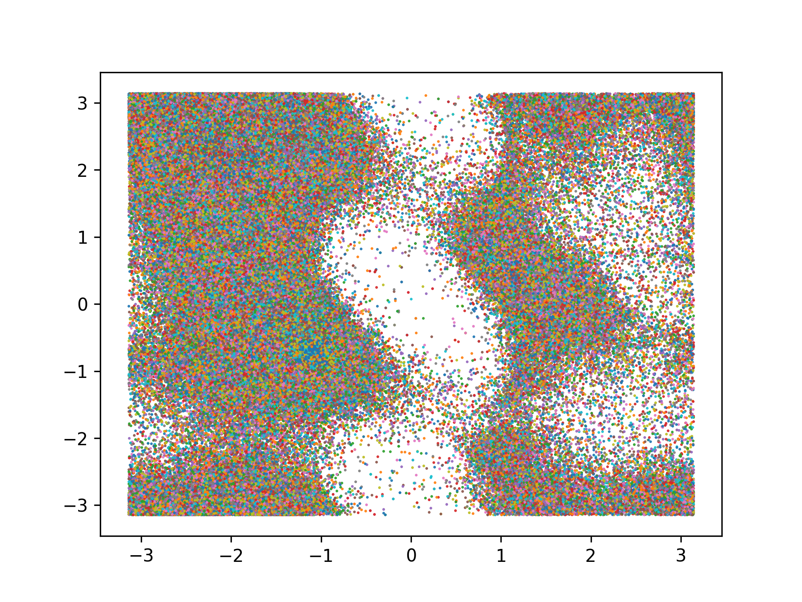

CSCI4969-6969 Assign5
Protein Structure Prediction: Distance and Angles
Due: April 28th, before midnight
In this assignment, you will add a dihedral angle prediction in addtion to the distance matrix prediction, and you also have to convert the predicted distance matrix or the dihedral angles into actual 3D coords.
Data
We will again make use of the ProteinNet Dataset. The details of the ProteinNet data are mentioned at ProteinNet Records. You can experiment with the smaller CASP7 set.
ProteinNet does not contain the true phi and psi angle pairs that we need for dihedral angle prediction. You can use the Code shown below to compute the dihedral angles. This will insert the [PHIPSI] entries into the ProteinNet files.
For converting dihedral to 3D coords, you can use the following mean bond length (in \(A^\circ\)) and bond angle (in radians) values. These were computed from the training_30 ProteinNet file:
FYI, the following plot also shows the phi (x-axis) vs. psi (y-axis) scatterplot (called the Ramachandran plot) from the 10333 protein structures in training_30.
Method
You will resue the same code from CSCI4969-6969 Assign4
The main difference is that you have to add a new output "head" to predict the phi and psi angles per position in the crop. You will use cross-entropy loss to compute the loss from the angle prediction. Use 36 bins to discretize the dihedral angles (so you get \(10^\circ\) or \(\pi/18\) radians per bin).
The final loss for training from a crop is the sum of the distance matrix loss and dihedral angle loss.
Once the joint model has been trained, apply it to the test set to compute the accuracy values for contact prediction as in assign4.
Given a test protein, you should include a command line option to generate the 3D structure. You must implement at least one of the following two methods: 1) use distance geometry to predict the 3D coords from the distance map, oe 2) use NERF method to predict the 3D coords from the dihedral angles (and the bond lengths and angles noted in Data).
For the distance geometry method, you have to compute the matrix $M$ of dot products from the distance matrix (as described in class), then compute its eigenvectors $W$ and values \(\Lambda\), and the obtain the 3D coords as \(A = (\Lambda^{1/2} W)^T\)
For dihedral angle to 3D coords you can use the pNERF implementation in OpenProtein
Lastly, you your print out the 3D coords to a file in the PDB format (see Bio.PDB), and visulaize the 3D protein structure using PyMOL. Include the predicted structure file as part of your submission.
Submission
Submit assign5.py via submitty, along with an output file (txt/pdf) that summarizes the results of your method in terms of training and testing accuracy values.
Your code must not hardcode any filenames or directories, but rather accept them from the command line input. Your code will be run as:
where TRAIN is the training file (e.g., training_30), and TEST is the testing file. Here NG is an integer that denotes the nubmer of block groups to train on. Here PDBID is an optional parameter that specifies a test protein file in ProteinNet format containing only one protein. If this parameter is specified it is the protein for which you have to generate the 3D coords and the visulaize it. I will specify a specific protein for structure generation soon.
Code
Here is the code to compute phi and psi angles to extend the ProteinNet files.
Example run: compute_phi_psi.py training_30
This will generate a new file training_30_ext that includes the new header entry '[PHIPSI]' after the tertirary structure entires, followed by two new lines. The first line has all the \(\phi_i\) angles and the second line has all the \(\psi_i\) angles, for $i=1,2, ..., n$. All angles are in radians and range between \([-\pi, \pi]\), with a value of $10$ denoting invalid angle (means it was not possible to compute it for that position due to missing coordinates in the PDB file). You should not predict these invalid angles, and they can be excluded from the loss too.
Note that you will need to install Biopython to run the code.
mlib/compute_phi_psi.py (Source)
1 2 3 4 5 6 7 8 9 10 11 12 13 14 15 16 17 18 19 20 21 22 23 24 25 26 27 28 29 30 31 32 33 34 35 36 37 38 39 40 41 42 43 44 45 46 47 48 49 50 51 52 53 54 55 56 57 58 59 60 61 62 63 64 65 66 67 68 69 70 71 72 73 74 75 76 77 78 79 80 81 82 83 84 85 86 87 88 89 90 91 92 93 94 95 96 97 98 99 100 101 102 103 104 105 106 107 108 109 110 111 112 113 114 115 116 117 118 119 120 121 122 123 124 125 126 127 128 129 130 131 132 133 134 135 136 137 138 139 140 141 142 143 144 145 146 147 148 149 150 151 152 153 154 155 156 157 158 159 160 161 162 163 164 165 166 167 168 169 170 171 172 173 174 175 176 177 178 179 180 181 182 183 184 185 186 187 188 189 190 191 192 193 194 195 196 197 198 199 200 201 202 203 204 205 206 207 208 209 210 211 212 213 214 215 216 217 218 219 220 221 222 223 224 225 226 227 228 229 230 231 232 233 234 235 236 237 238 239 240 241 242 243 244 245 246 |
#!/usr/bin/env python3
import argparse
import matplotlib.pyplot as plt
import numpy as np
from Bio.PDB.vectors import Vector, calc_angle, calc_dihedral
MAX_SEQUENCE_LENGTH = 2000
AA_ID_DICT = {'A': 1, 'C': 2, 'D': 3, 'E': 4, 'F': 5, 'G': 6, 'H': 7, 'I': 8, 'K': 9,
'L': 10, 'M': 11, 'N': 12, 'P': 13, 'Q': 14, 'R': 15, 'S': 16, 'T': 17,
'V': 18, 'W': 19, 'Y': 20}
INVALID_ANGLE = 10 # invalid angle value
def parse_args():
parser = argparse.ArgumentParser(description='compute_phi_psi.py')
parser.add_argument('fname')
parser.add_argument('-plot', action='store_true')
args = parser.parse_args()
return args
def encode_primary_string(primary):
return list([AA_ID_DICT[aa]-1 for aa in primary])
class running_stats:
'''this class computes mean and std values for a
list of values across proteins'''
def __init__(self, name_str):
self.name = name_str
self.x = 0.0
self.x2 = 0.0
self.n = 0
def update(self, Vin):
V = np.array(Vin)
self.x += np.sum(V)
self.x2 += np.sum(V**2)
self.n += len(Vin)
def print_stats(self):
mu = self.x / self.n
std = np.sqrt(self.x2/self.n - mu**2)
print("bond length", self.name, mu, std)
class compute_stats:
'''Compute mean and std values for bond lengths and bond angles'''
def __init__(self):
self.CN = running_stats("CN")
self.NCa = running_stats("NCa")
self.CaC = running_stats("CaC")
self.CNCa = running_stats("CNCa")
self.NCaC = running_stats("NCaC")
self.CaCN = running_stats("CaCN")
def update(self, v_CN, v_NCa, v_CaC, v_CNCa, v_NCaC, v_CaCN):
self.CN.update(v_CN)
self.NCa.update(v_NCa)
self.CaC.update(v_CaC)
self.CNCa.update(v_CNCa)
self.NCaC.update(v_NCaC)
self.CaCN.update(v_CaCN)
def print_stats(self):
self.CN.print_stats()
self.NCa.print_stats()
self.CaC.print_stats()
self.CNCa.print_stats()
self.NCaC.print_stats()
self.CaCN.print_stats()
def process_tertiary(tertiary):
'''compute the bond lengths, bond angles, and dihedral angles'''
phi = []
psi = []
omega = []
bond_angle_CNCa = []
bond_angle_NCaC = []
bond_angle_CaCN = []
bond_len_NCa = []
bond_len_CaC = []
bond_len_CN = []
# convert tertiary coords into Vectors
pV = [vec for vec in map(lambda v: Vector(v[0], v[1], v[2]),
zip(tertiary[0], tertiary[1], tertiary[2]))]
for i in range(0, len(pV), 3):
# check for zero coords
norm_im1 = False
norm_i = False
norm_i1 = False
norm_i2 = False
norm_i3 = False
norm_i4 = False
if i > 0 and pV[i-1].norm() > 0:
norm_im1 = True
if pV[i].norm() > 0:
norm_i = True
if pV[i+1].norm() > 0:
norm_i1 = True
if pV[i+2].norm() > 0:
norm_i2 = True
if i + 3 < len(pV) and pV[i+3].norm() > 0:
norm_i3 = True
if i + 3 < len(pV) and pV[i+4].norm() > 0:
norm_i4 = True
# compute bond lengths
if norm_im1 and norm_i:
blen_CN = (pV[i-1]-pV[i]).norm()
bond_len_CN.append(blen_CN)
if norm_i and norm_i1:
blen_NCa = (pV[i]-pV[i+1]).norm()
bond_len_NCa.append(blen_NCa)
if norm_i1 and norm_i2:
blen_CaC = (pV[i+1]-pV[i+2]).norm()
bond_len_CaC.append(blen_CaC)
# compute bond angles
if norm_im1 and norm_i and norm_i1:
theta_CNCa = calc_angle(pV[i-1], pV[i], pV[i+1]) # C-N-Ca
bond_angle_CNCa.append(theta_CNCa)
if norm_i and norm_i1 and norm_i2:
theta_NCaC = calc_angle(pV[i], pV[i+1], pV[i+2]) # N-Ca-C
bond_angle_NCaC.append(theta_NCaC)
if norm_i1 and norm_i2 and norm_i3:
theta_CaCN = calc_angle(pV[i+1], pV[i+2], pV[i+3]) # Ca-C-N
bond_angle_CaCN.append(theta_CaCN)
# compute dihedral angles
if norm_im1 and norm_i and norm_i1 and norm_i2:
phi_i = calc_dihedral(
pV[i-1], pV[i], pV[i+1], pV[i+2]) # N-Ca-C-N
else:
phi_i = INVALID_ANGLE
phi.append(phi_i)
if norm_i and norm_i1 and norm_i2 and norm_i3:
psi_i = calc_dihedral(
pV[i], pV[i+1], pV[i+2], pV[i+3]) # C-N-Ca-C
else:
psi_i = INVALID_ANGLE
psi.append(psi_i)
if norm_i1 and norm_i2 and norm_i3 and norm_i4:
omega_i = calc_dihedral(
pV[i+1], pV[i+2], pV[i+3], pV[i+4]) # Ca-C-N-Ca
else:
omega_i = INVALID_ANGLE
omega.append(omega_i)
return (phi, psi, omega, bond_angle_NCaC, bond_angle_CaCN,
bond_angle_CNCa, bond_len_CN, bond_len_NCa, bond_len_CaC)
def read_protein_from_file(args):
'''Parse ProteinNet file and add PHIPSI entries'''
CS = compute_stats()
filename = args.fname
out_fname = filename+"_ext"
with open(out_fname, "w") as out_file:
with open(filename, "r") as file_pointer:
pcnt = 0
id_next = False
while(True):
next_line = file_pointer.readline()
print(next_line, file=out_file, end='')
if id_next:
id_next = False
print("ID", next_line, end='')
if next_line == '[ID]\n':
id_next = True
if next_line == '[TERTIARY]\n':
tertiary = []
# 3 dimension
for _axis in range(3):
next_line = file_pointer.readline()
print(next_line, file=out_file, end='')
tertiary.append(
[float(coord)/100 for coord in next_line.split()])
# write the PHI_PSI angles
print('[PHI_PSI]', file=out_file)
phi, psi, omega,\
bond_angle_NCaC, bond_angle_CaCN, bond_angle_CNCa,\
bond_len_CN, bond_len_NCa, bond_len_CaC = process_tertiary(
tertiary)
CS.update(bond_len_CN, bond_len_NCa, bond_len_CaC,
bond_angle_CNCa, bond_angle_NCaC,
bond_angle_CaCN)
print("process", pcnt, len(tertiary[0])//3, len(phi),
len(psi), "\n")
assert(len(tertiary[0])//3 == len(phi))
# print(gt, bl[gt])
if args.plot:
# only plot valid phi,psi pairs (not equal to -1)
phi_a = np.array(phi)
psi_a = np.array(psi)
phi_idx = set(
np.where(phi_a != INVALID_ANGLE)[0])
psi_idx = set(
np.where(psi_a != INVALID_ANGLE)[0])
val_idx = list(phi_idx.intersection(psi_idx))
plt.plot(phi_a[val_idx], psi_a[val_idx],
'o', markersize=0.5)
out_phi = " ".join([str(v) for v in phi])
print(out_phi, file=out_file)
out_psi = " ".join([str(v) for v in psi])
print(out_psi, file=out_file)
elif next_line == '\n':
pcnt += 1
elif next_line == '':
break
if args.plot:
# plt.show()
plt.savefig(args.fname+'_phipsi_plot.png', dpi=300,
transparent=True)
CS.print_stats()
if __name__ == "__main__":
args = parse_args()
print(args)
read_protein_from_file(args)
|